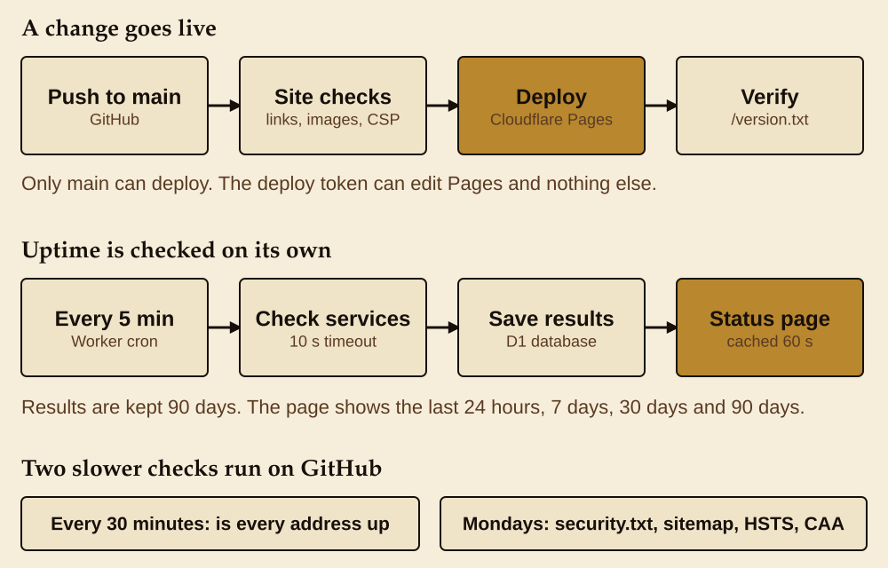

Infrastructure
endyland hosting and status page
The hosting, status page and backups behind endyland.com.
- Private repo

In numbers
- 5 minbetween health checks
- 99.98%portfolio uptime over 30 days
- 90 daysof checks kept
- 30 minbetween GitHub uptime checks
The problem
A portfolio should be up when someone clicks it, and its owner should know within minutes if it is not. A bad push should not be able to take it down either.
The approach
The site is plain files on Cloudflare Pages. The small services around it run as Cloudflare Workers or behind Cloudflare tunnels, so nothing has to be opened on my home network. A status page watches all of it, and deploys run on their own when new code lands, after the site checks pass.
How it works

A change goes live
A push to the main branch starts the site checks. They look for broken links, missing image sizes, inline scripts, a loosened security policy and anything else that would make a page worse. If they pass, the site is deployed to Cloudflare Pages. A last step asks the live site which commit it is serving and fails if it is the wrong one.
Only the main branch can deploy. The deploy token can edit Pages and nothing else, and only that branch can read it.
The status page
A Cloudflare Worker wakes every 5 minutes, checks each service all at once with a 10 second limit and no redirects followed, and stores the result in a small D1 database. A service is up only if every one of its checks passes. The portfolio, for example, must answer 200 with a content security policy, and its security.txt file must be there.
The page reads only the small summary tables, which keeps it fast, and answers are cached for 60 seconds. It shows the last 24 hours, 7 days and 30 days as percentages, a bar for each of the last 90 days, and a list of incidents, which open when a service goes down and close when it comes back.
Slower checks on GitHub
A scheduled job checks every address and certificate every 30 minutes. On Mondays another one checks that the security.txt date is still valid, the sitemap is right, and the HSTS and CAA settings are in place. Both only report. They never block a deploy.
Security settings
The connection settings were tightened in one scripted pass, with the state before it saved so every change can be rolled back.
| Setting | Before | After |
|---|---|---|
| SSL mode | Full | Full (strict) |
| Always use HTTPS | Off | On |
| Minimum TLS | 1.0 | 1.2 |
| HSTS | Off | 6 months, subdomains |
| www address | Separate | 301 to endyland.com |
The pages send a strict content security policy with no inline scripts, and refuse to be framed. The domain sends no email, and its records say so, which stops anyone from spoofing it.
Results
On November 11, 2026 the status page showed the portfolio up for 19 days in a row, with 100% over the last 24 hours and 7 days and 99.98% over 30 days. The response time was 72 milliseconds at the moment of the capture.
Deploys need no manual steps. The repo is private, so there is no link, and the screenshot above is cropped to the portfolio so it shows only what belongs on this page.
What I did
- Host the site on Cloudflare Pages, with Workers and tunnels for the rest.
- Built a status page that checks every service every 5 minutes.
- Deploys run on their own when new code lands, after the site checks pass.
- Set up backups for the services behind the site.
What I learned
Check the live result, not only the build. Asking the site which commit it serves catches a deploy that "succeeded" but went nowhere.
Give every key the smallest job. A token that can edit Pages and nothing else is a small thing to lose.
Keep a record of the settings before you change them. The saved copy turns a risky change into one you can undo.